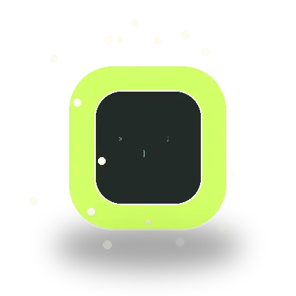

Clipboard before
copied from docs
fn paste() {
let text = clipboard.read();
let clean = dedent(text);
clipboard.write(clean);
}dedent-paste removes the common indentation from your clipboard, rewrites the result as plain text, and pastes it immediately. Use Option+V with Karabiner-Elements on macOS, or Win+V with AutoHotkey on Windows.
curl -fsSL https://raw.githubusercontent.com/doggy8088/dedent-paste/main/install.sh | bash
irm https://github.com/doggy8088/dedent-paste/releases/latest/download/dedent-paste-installer.ps1 | iex
Releases include both shell and PowerShell installers. For AutoHotkey, prefer the fixed path
%USERPROFILE%\.local\bin\dedent-paste.exe
instead of waiting for PATH changes to refresh.

fn paste() {
let text = clipboard.read();
let clean = dedent(text);
clipboard.write(clean);
}fn paste() {
let text = clipboard.read();
let clean = dedent(text);
clipboard.write(clean);
}Pick the stack that matches your machine. The README separates macOS and Windows install, setup, and usage steps so you can wire up the right shortcut without guessing.
Run the shell installer, let it add the Karabiner rule, and allow Accessibility access if macOS asks.
Run the PowerShell installer, then bind Win+V with AutoHotkey v1 or v2. Want clipboard history too? Remap it to Alt+V or another key.
Installers can update PATH, but shortcut tools are more reliable when they launch the installed binary directly.
Fast, precise, and made for people who move text all day. One shortcut removes the messy shared indent while leaving your normal paste shortcut untouched on each platform.
Karabiner-Elements maps Option+V on macOS. AutoHotkey can map Win+V on Windows, or another shortcut if you want to keep clipboard history.
GitHub Releases publish shell and PowerShell installers, platform archives, and checksums for common targets.
The clipboard is read as text, written back as UTF-8, then pasted with macOS System Events or a simulated Ctrl+V on Windows.